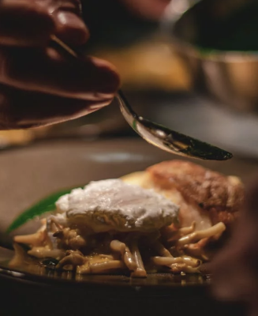

Exquisite dining
since 1989
Experience our seasonal menu in beautiful country surroundings. Eat the freshest produce from the comfort of our farmhouse.
BOOK TABLE-
Enjoyable place
for all the familyOur relaxed surroundings make dining with us a great experience for everyone. We can even arrange a tour of the farm before your meal.

-
The most locally
sourced foodAll our ingredients come directly from our farm or local fishery. So you can be sure that you’re eating the freshest, most sustainable food.
A few highlights from our menu
We cater for all dietary requirements, but here’s a glimpse at some of our diner’s favourites. Our menu is revamped every season.

Rosemary Filet Mignon
Our prime beef served to your taste with a delicious choice of seasonal sides.

Summer Fruit Chocolate Mousse
Creamy mousse combined with
summer fruits and dark chocolate shavings.
FAMILY GATHERING
We love catering for entire families. So please bring everyone along for a special meal with your loved ones. We’ll provide a memorable experience for all.
BOOK A TABLE